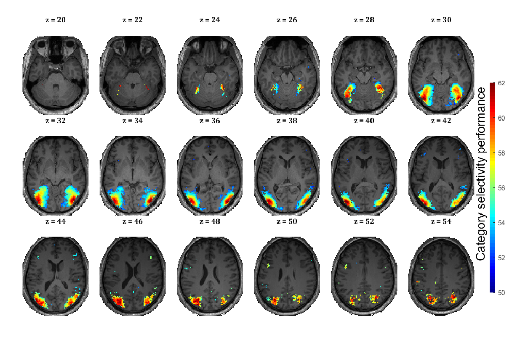

|
Morteza Mahdiani I am a Master's student in Computer Science at the University of Montreal and Mila , currently working in the Charest Lab. My research focuses on NeuroAI, computer vision, and generative AI, with a specific interest in comparing AI models with brain data. Previously, I served as a research assistant at Mila and the University of Montreal, working on related interdisciplinary projects in these fields.
Contact: |

|
Recent Publications |

|
Fine-grained knowledge about manipulable objects is well-predicted by CLIP
Jon Walbrin, Nikita Sossounov, Morteza Mahdiani, Igor Vaz, Jorge Almeida iScience, 2024 This study reveals that CLIP-ViT effectively predicts behavioral dimensions of objects, outperforming models trained only on image-based datasets. |
|  |
A Multimodal Neuroimaging Dataset to Study Spatiotemporal Dynamics of Visual Processing in Humans
Fatemeh Ebrahiminia, Morteza Mahdiani, Seyed-Mahdi Khaligh-Razavi bioRxiv, 2022 This dataset from 21 healthy volunteers combines fMRI and EEG data to study object recognition, offering new insights into human brain function. |